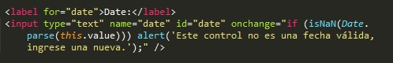
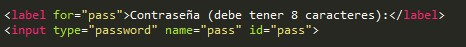

Pauta 3.3 Entrada de datos asistida
Ayudar a los usuarios a evitar y corregir los errores.
La información y el manejo de la interfáz de usuario deben ser comprensibles.
Ayudar a los usuarios a evitar y corregir los errores.
Si se detecta automáticamente un error en la entrada de datos, el elemento erróneo es identificado y el error se describe al usuario mediante un texto.
Se deben crear alertas que indiquen al usuario en que campo del formulario está el error.
Se proporcionan etiquetas o instrucciones cuando el contenido requiere la introducción de datos por parte del usuario.
En el caso de un formulario con un campo contraseña que deba cumplir cierto requisitos apra que sea válido, se debe indicar al usuario los requisitos que debe cumplir la contraseña para que sea válida.
